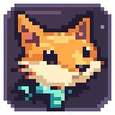

⚑ ТАНЫ ДААЛГАВАР
Хүлээгдэж буй үр дүн
Тоглоомын командууд
move() — 1 нүд алханаjump() — 2 нүд үсэрнэcollect() — зоос авнаcan_move() — зам чөлөөтэй эсэх

Python код бичих аяллаа зөөврийн эсвэл суурин компьютер дээр эхлүүлээрэй. Энэ холбоосыг компьютер руугаа илгээж болно.
5 ертөнц · 30 даалгавар · 5 тулаан
50 цагийн 66 хичээл. Хоёр төслөөс сонгон код бичиж, сүүлчийн хоёр хичээлээр өөрийн тоглоомыг ангийнхандаа тоглуулаарай.
Сурсан чадвараа дахин ашиглаж бататгаарай.
move() — 1 нүд алханаjump() — 2 нүд үсэрнэcollect() — зоос авнаcan_move() — зам чөлөөтэй эсэх
Python кодоо чөлөөтэй турш. Энд түвшин, онооны шалгалт байхгүй.
Код 5 секундээс удаан ажиллавал автоматаар зогсоно. input()-ийн оронд хувьсагчид утгаа бичээрэй.
Код энэ браузерт ажиллана.
Python хөдөлгүүр: PyodideСурсан ойлголтоо хайж, жишээгээр сэргээгээрэй.
Таны кодын үр дүн энд гарна.